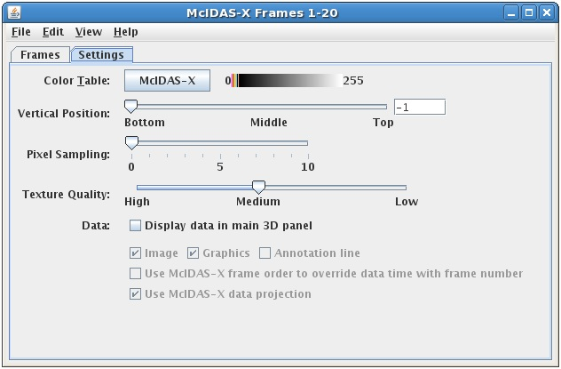

Overview
The McIDAS-X Bridge Controls are used to create and import a McIDAS-X session into McIDAS-V. The control window has two tabs, Frames and Settings.
The Frames tab includes a pseudo duplicate of the two main McIDAS-X windows:

Image 1: Frames Tab of the McIDAS-X Bridge Controls Dialog
The Settings tab shows the settings for this display control:

Image 2: Settings Tab of the McIDAS-X Bridge Controls Dialog
Image 2: Settings Tab of the McIDAS-X Bridge Controls Dialog
Vertical cross sections can be made in three types of displays, with contour lines, color-filled contours, and as a color-shaded image.
Properties
- Command Line - Reads McIDAS-X commands that can be entered through the "Command Line" text entry box at the bottom of the Layer Controls tab. Interactive commands are not implemented. Recall commands (Shift+6 and Shift+7) do work in the bridge session.
- Smooth images - Uses anti-aliasing to smooth images when re-sizing to fit the frame display.
- Time Animation Controls -

Controls looping of displays when more than one data time is loaded. See more in Time Animation Control.
- Color Table - Shows the active color table and the associated high and low data values in the units of the display. As the mouse pointer is moved over the color bar, the value at a particular color is shown. Right click on the color bar or click on the button that displays the name of the Color Table to make modifications to the color bar. This allows you to open thee Color Table Editor, change the range, select other color tables, etc.
- Vertical Position - Displays the locations at their altitude (if there is one) or specifically defines the vertical position. This can be changed by using the slider or typing a value into the field.
- Pixel Sampling - Sets the resolution of the image. A larger number makes a lower resolution (coarser) display.
- Texture Quality - Sets the quality of the displayed texture of Image Control. A higher quality will take longer to render and more memory.
- Display data in the main 3D panel - Displays images, graphics, and/or annotation lines from navigated frames in the McIDAS-X Bridge session the Main Display window. Non-navigated frames are not imported into McIDAS-V and will be skipped.
- Use McIDAS-X frame order to override data time with frame number - Imports navigated data into McIDAS-V based upon their order within the McIDAS-X frame order instead of by time.
- Use McIDAS-X data projection - Uses the default projection for McIDAS-X when displaying navigated data in the Main Display window in McIDAS-V.